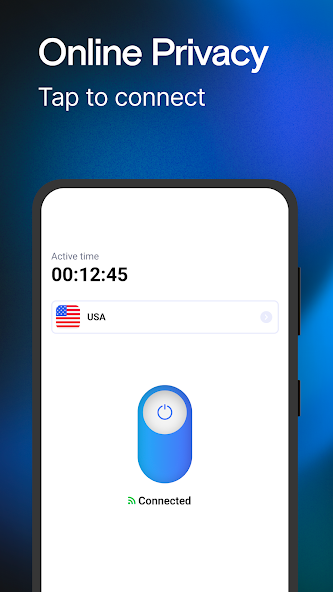
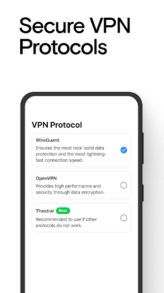
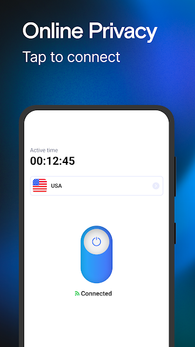
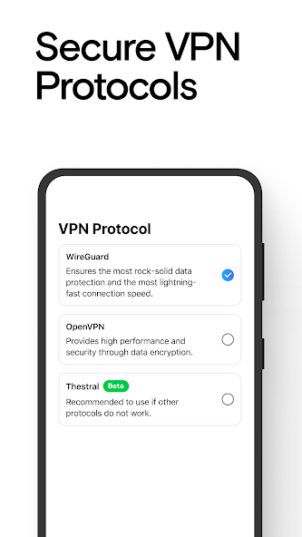

VPN Lumos Review – Simple VPN App for Android Users
VPN apps are becoming increasingly popular among Android users who want a more private and secure browsing experience. One such application is VPN Lumos, a simple VPN app designed for ease of use.
What is VPN Lumos?
VPN Lumos is an Android VPN application that provides a clean and user-friendly interface. It is suitable for users who want quick VPN access without dealing with complicated configuration or advanced settings.
The app focuses on simplicity, allowing users to connect to a VPN network with just one tap.
App Screenshots
Below are real screenshots from the official app listing.
 



Screenshots are for reference only. App features may vary by device.
Key Features
- Simple one-tap VPN connection
- Fast and stable performance
- Clean and easy-to-use interface
- Works smoothly on most Android devices
Who Should Use This App?
VPN Lumos may be suitable for:
- Android users looking for a basic VPN solution
- Users who prefer an easy setup
- People who want a lightweight VPN app
How to Install
- Click the install button below
- Install VPN Lumos from Google Play
- Open the app and keep it open for a short time
Google Play and Android are trademarks of Google LLC.